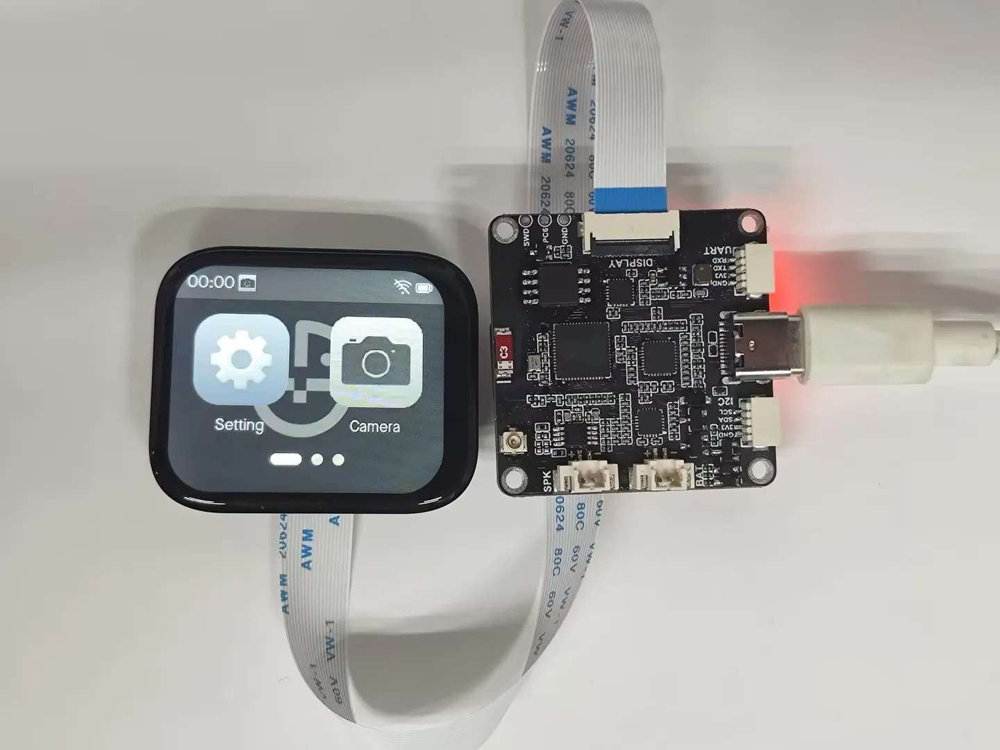

返回屏幕排线容量研究 · 线束总进展
先核对入口方向，再连接整根排线
主模型仍为 M1.49 C5＋K1。以下转向图只用于比较，未应用到主模型。相机座有明确照片方向差异；CAM 屏幕座不能据此一起翻转。
1. 相机：官方已接线照片显示向上出线
2. CAM 屏幕座：向板外出线，保留正确的黑白布局

官方已接线实拍：USB朝右，把板转回USB朝下后，排线向照片右／主板−U／零位−X出线。示例使用其他尺寸屏幕，仅支持CAM端方向，不证明本项目整链路兼容。微雪原始使用说明。
3. LCD 原厂 CAD：从 −X 侧接近入口
此前两端各 15 mm 的长度预算需要调整
中央段末端朝 −X，进入 LCD 时需朝 +X。沿用 R7.5 mm 的容量假设，仅转向180°就至少需要23.56 mm，已超过15 mm。R5假设也至少15.71 mm。这里还没有计入插深和两端的位置偏差。
CAM端也要从−X反向接到原中央段的+X切向。R7.5假设下，两端合计至少47.12 mm，中央段最多152.88 mm；这个上限还没扣除插入、补强和位置偏差，不代表新路径已通过。
旧中央段的空间检查仍有效，但不能把它直接当成完整排线。需要重新分配中央段与端部长度；这不是“200 mm 原配线不够长”的结论。R5／R7.5 也不是厂家给定的弯曲限制。
| 已经确定 | 仍未确定 |
|---|
| 同一俯仰组；官方已插线照片中的相机+Z及CAM屏幕−X方向；LCD原CAD入口侧；旧15 mm预算不足 | 所购批次、接触面／针1、完整型号、线宽厚、补强、插深及允许弯曲数据 |
硬件 CAM-FPC-EXIT-R1 已正式接收并核对31份文件哈希。完整屏幕排线、相机FPC、固定及带线装配仍为 BLOCKED。没有修改打印件、孔位、BOM或视频。
硬件证据接收记录 · 原始交接 · 明确缺失的字段
可编辑三组方向对照 · 详细判断与限制 · 双端长度必要条件 · 先前LCD单端计算
原始模型提取 · 几何变更范围 · 实际命令与日志 · 主文件保留检查
后续：CAM 入口修正模型
相机入口朝 SD 卡、屏幕入口朝板外；保留包体外包络和其余元件。262 组同板比较、130 个姿态未检出新增相交，真实插接仍未完成。主模型未替换。
查看入口侧前后对比